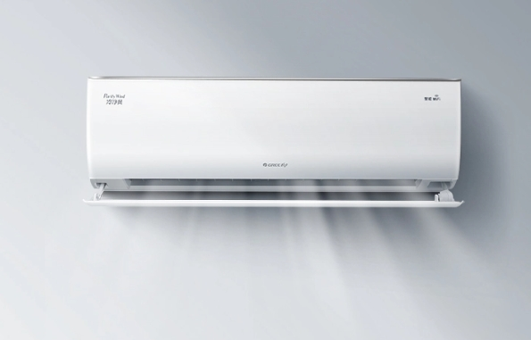

家用电器
左边显示室温，右边显示空调的状态。摇一摇，空调运行，放下空调停止运行。
室温:
reloading
reloading
空调:
reloading
reloading

无论你在哪里，随时可以通过手机网页查看家中空调的状态。
通过demo显示，可以看到当前室内的温度(液晶显示器上的温度传感器) 然后通过SimpleLink CC3200 将数据传送到你的手机设备 (first display shown).
当摇动单片机电板，会促使空调判断温度。接着一条“空调开始工作”的消息就会传送到你的手机 (second display shown).